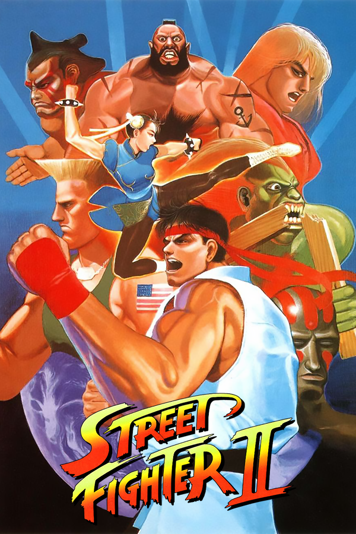

|  | |
| Playtime | Not Played |
| Last Activity | Never |
| Added | 4/29/2025 6:52:10 |
| Modified | 4/29/2025 23:30:09 |
| Completion Status | Not Played |
| Library | Playnite |
| Source | |
| Platform | Nintendo SNES |
| Release Date | 1992 |
| Community Score | |
| Critic Score | |
| User Score | |
| Genre | Arcade Fighting |
| Developer | Capcom Creative Materials |
| Publisher | Capcom U.S. Gold |
| Feature | Controller Support Multiplayer Single Player |
| Links | PCGamingWiki HowLongToBeat StrategyWiki MobyGames Wikipedia |
| Tag | Direct control Pixel art Real-Time Side view |
Street Fighter II: The World Warrior is a 1991 fighting game developed and published by Capcom for arcades. It is the second installment in the Street Fighter series and the sequel to 1987's Street Fighter. It is the fourteenth game to use Capcom's CP System arcade system board. Street Fighter II vastly improved many of the concepts introduced in the first game, including the use of special command-based moves, a combo system, a six-button configuration, and a wider selection of playable characters, each with a unique fighting style.
Designed by Yoshiki Okamoto and Akira Yasuda, who had previously worked on Final Fight, Street Fighter II is regarded as one of the greatest video games of all time and the most important and influential fighting game ever made. Its launch is seen as a revolutionary moment within its genre, credited with popularizing the fighting genre during the 1990s and inspiring other producers to create their own fighting series. Additionally, it prolonged the survival of the declining video game arcade business market by stimulating business and driving the fighting game genre. It prominently features a popular two-player mode that obligates direct, human-to-human competitive play, inspiring grassroots tournament events, culminating in Evolution Championship Series (EVO). Street Fighter II shifted the arcade competitive dynamic from achieving personal-best high scores to head-to-head competition, including large groups.
Street Fighter II became the best-selling game since the golden age of arcade video games. By 1994, it had been played by an estimated 25 million people in the United States alone. More than 200,000 arcade cabinets and 15 million software units of every version of Street Fighter II have been sold worldwide, earning an estimated $10 billion in total revenue, making it one of the top three highest-grossing video games of all time as of 2017 and the best-selling fighting game until 2019. More than 6.3 million SNES cartridges of Street Fighter II were sold, making it Capcom's best-selling single software game for the next two decades, its best-selling game on a single platform, and the highest-selling third-party game on the SNES. Due to its major success, a series of updated versions were released with additional features and characters, starting with 1992's Street Fighter II: Champion Edition; its major successor was Street Fighter III in 1997.
Street Fighter II follows several conventions and rules established by its 1987 predecessor Street Fighter. The player engages opponents in a series of timed one-on-one, close-quarters combat matches. In order to win a round, the player must either completely drain the opponent's health bar by landing attacks, or have more health left than the opponent when the timer runs out. Neither fighter wins the round if they have equal health when time expires or if they simultaneously knock each other out. The first fighter to win two rounds is declared the victor of the match.
While a single-player game is in progress, a second player may join at any time, immediately starting a head-to-head match. The winner continues in single-player mode.
The original Street Fighter II allowed up to 10 rounds per match; this maximum is reduced to four rounds starting with Champion Edition. If there is no clear winner by the end of the final round, either the computer-controlled opponent will win by default in a single-player match or both fighters will lose in a two-player match. After every third match in the single-player mode, a bonus stage gives a chance to earn additional points by smashing a car, wooden barrels, or metal oil drums. After each match, the location for the next one is selected on a world map.
Like in Street Fighter, the controls are an eight-directional joystick and six attack buttons. The joystick can jump, crouch, walk left and right, and block. A tradeoff of strength and speed are given by three punch buttons and three kick buttons, each of light, medium, and heavy. The player can perform a variety of basic moves in any position, including new grabbing and throwing attacks. Special moves are performed by combinations of directional and button-based commands.
Street Fighter II differs from its predecessor due to the selection of multiple playable characters, each with distinct fighting styles and special moves including combos. According to IGN, "the concept of combinations, linked attacks that can't be blocked when they're timed correctly, came about more or less by accident. Street Fighter II's designers didn't quite mean for it to happen, but players of the original game eventually found out that certain moves naturally flowed into other ones." This combo system was later adopted as a standard feature of fighting games and was expanded upon in this series.
The leader of the Shadaloo organization, M. Bison, in his global domination plan sets up a world fighting tournament, to select the best fighters to work in his Shadaloo organization through brainwashing. Many of the other characters in the game have personal reasons for wanting revenge on Bison.
The original Street Fighter II features a roster of eight playable characters. This includes Ryu and Ken—the main protagonists from Street Fighter—plus six new international newcomers. In the single-player tournament, the player fights the other seven main fighters, then the final opponents—a group of four CPU-only opponents known as the Grand Masters, which includes Sagat from Street Fighter.
Playable characters:
CPU-exclusive characters, in the order of appearance:
Takayuki Nakayama stated in an interview that many character design ideas were trialled and dropped along the development process. Rejected character designs for Street Fighter II included another bullfighter and an American amateur wrestler.
With the exception of Sagat, the Shadaloo Bosses have different names in the Japanese version. The African-American boxer known as Balrog in the international versions was designed as a pastiche of real-life boxer Mike Tyson and was originally named M. Bison (short for "Mike Bison", with "Mike" being one of the American opponents faced in Street Fighter). Vega and M. Bison were originally named Balrog and Vega, respectively. When Street Fighter II was localized for the overseas market, the names of the bosses were rotated, out of concern that the boxer's similarities to Tyson could have led to a likeness infringement lawsuit.
The characters in the Japanese version have more than one win quote and if the player loses a match against the CPU in the Japanese version, a random playing tip will be shown at the bottom of the continue screen. While the ending text for the characters was originally translated literally, a few changes were made due to creative differences from Capcom's U.S. marketing staff. For example, the name of Guile's fallen friend (who later debuted as a playable fighter in Street Fighter Alpha) was changed from Nash to Charlie, since a staff member from Capcom USA said that Nash is not a natural sounding English name.
Although the original punching-pad cabinet of Street Fighter had not been very popular, the alternate six-button version was more successful, which began to generate interest in a sequel. Capcom began to make fighting games a priority after Final Fight was commercially successful in the United States. Yoshiki Okamoto recounted: "The basic idea at Capcom was to revive Street Fighter, a good game concept, to make it a better-playing arcade game."
Development of Street Fighter II took about two years and about 35 to 40 people, with Noritaka Funamizu as a producer, and Akira Nishitani and Akira Yasuda in charge of the game and character design, respectively. The budget was estimated at $2,450,000 (equivalent to $5,660,000 in 2024).
Funamizu notes that the developers did not particularly prioritize Street Fighter II's balance; he primarily ascribes the game's success to its appealing animation patterns. The quality of animation benefited from the developers' use of the CPS-1 hardware, with advantages including allowing different characters to occupy different amounts of memory. For example, Ryu can occupy 8 megabits and Zangief 12 megabits.
The combo system came about by accident:
The vast majority of in-game music was composed by Yoko Shimomura. This is ultimately the only game in the series on which Shimomura worked, as she left the company for Square two years later. Isao Abe, a Capcom newcomer, handled a few additional tracks ("Versus Screen", "Sagat's Theme", and "Here Comes A New Challenger") for Street Fighter II and became the main composer on the subsequent versions. The sound programming and sound effects were overseen by Yoshihiro Sakaguchi, the composer on Street Fighter.
Location testing began in Japan. It was then exhibited in the United Kingdom at London's Amusement Trades Exhibition International (ATEI) in January 1991. The same month, Capcom held a two-week location test in North America, before unveiling the game at Capcom's distributor conference on February 1, 1991, held at Marriott Harbor Beach, Fort Lauderdale, Florida. Capcom introduced Street Fighter II as its "greatest video game ever".
Street Fighter II spawned a series of revisions, each refining the play mechanics, graphics, character roster, and other aspects of the game:
In addition to the official updated versions, numerous counterfeit modified versions of Street Fighter II were in wide circulation. For example, nine different counterfeit versions were available on the Super Famicom in Japan by December 1992.
All of the Street Fighter II arcade games have been ported to various platforms, as individual releases and also in compilations. Later home console ports further reinvented elements from the arcades: Hyper Street Fighter II released in December 2003 (which was later given an arcade release), Super Street Fighter II Turbo HD Remix released in November 2008, and Ultra Street Fighter II: The Final Challengers released in May 2017; the latter of which added three additional characters who previously debuted outside the Street Fighter II line of titles.
Street Fighter II was released for the Super Famicom on June 10, 1992, in Japan, followed by a North American release for the SNES in August and a European release in December. It is the first game released on a 16-megabit SNES cartridge. Many aspects from the arcade versions were either changed or simplified in order to fit into the smaller memory capacity. This version has a secret code allowing both players to control the same character in a match, which is not possible in the original arcade version. The second player uses the same alternate color palette introduced in Street Fighter II: Champion Edition. The four Shadaloo Bosses are still non-playable, but the code enables their Champion Edition color palette. Tatsuya Nishimura, who had recently joined Capcom from TOSE, arranged the soundtrack with assistance from Shimomura, Abe, and Sakaguchi.
The American SNES cartridge was re-released in November 2017 as a limited edition item to celebrate the anniversary of the Street Fighter series.
U.S. Gold released versions of Street Fighter II for various home computer platforms in Europe, namely the Amiga, Atari ST, Commodore 64, PC (DOS), and ZX Spectrum. These were all developed by Creative Materials, except the ZX Spectrum version by Tiertex Design Studios. The PC version was also published in North America by Hi-Tech Expressions. These versions suffer numerous inaccuracies, such as missing graphical assets and music tracks, miscolored palettes, and lack of six-button controls due to these platforms having only one or two-button joysticks as standard at the time. Though officially advertised by US Gold along with the C64 and ZX Spectrum conversions and anticipated in magazines, the Amstrad CPC development by Creative Materials was canceled.
This standalone handheld machine was missing Chun-Li and Dhalsim.
The Game Boy version of Street Fighter II was released on August 11, 1995, in Japan, and in September 1995 internationally. It is missing Dhalsim, E. Honda, and Vega. The graphics, character portraits, and stages are based on Super Street Fighter II, although some moves (ex: Blanka's Amazon River Run) from Super Street Fighter II Turbo are included. Because the Game Boy only has two buttons, the strength of punches and kicks is determined by the duration of button presses.
Street Fighter II, Champion Edition, and Turbo are in the compilation Capcom Generation 5 for the PlayStation and Sega Saturn, which was released in North America and Europe as Street Fighter Collection 2. All three games are in Capcom Classics Collection Vol. 1 for the PlayStation 2 and Xbox, and in Capcom Classics Collection Reloaded for the PlayStation Portable. In 2011, all three games were released on iOS devices as the Street Fighter II Collection, though the compilation was later delisted from the App Store. In 2018, Street Fighter II was one of the many games included in the Street Fighter 30th Anniversary Collection for the PlayStation 4, Nintendo Switch, Xbox One and Windows.
By 1994, Street Fighter II had been played by an estimated 25 million people in the United States alone, across arcades and homes. All versions of Street Fighter II are estimated to have grossed a total of $10.61 billion in revenue, mostly from the arcade market. As of 2017, it is one of the top three highest-grossing video games of all time, along with Space Invaders (1978) and Pac-Man (1980).
Street Fighter II was not immediately successful in Japan, as most arcade players were initially playing it solo, rather than multiplayer as originally intended. Yoshiki Okamoto was disappointed with its initial performance, and was told he should have produced another solo beat 'em up like Final Fight instead. After Japanese arcade magazine Gamest began publishing articles informing readers about the "battle play" feature, the game began gaining considerable popularity in Japanese arcades. In Japan, Game Machine magazine listed the game on their April 1, 1991 issue as being the second most-successful table arcade cabinet of the month, outperforming games such as Detana!! TwinBee and King of the Monsters, before Street Fighter II topped the charts two weeks later. It went on to become the highest-grossing arcade game of 1991 in Japan, and then it again became the highest-grossing arcade game of 1992. Street Fighter II Turbo became the highest-grossing arcade game of 1993, with Street Fighter II Dash (Champion Edition) at number four and The World Warrior at number nine.
Street Fighter II was similarly successful in the Western world. In the United States, the game was more immediately successful as it exceeded expectations in test markets, with individual machines earning $1,300–1,400 per week, Capcom USA sales representative Jeff Walker predicted it would "become the kit of 1991" and RePlay magazine said the game showed there was "plenty of life" left in the then struggling arcade business. By March, it had become a blockbuster and the top-grossing game in the United States, giving a substantial boost in earnings for street operators. It topped the RePlay arcade software charts from May 1991 through August 1992, for a total of 16 months. On the Play Meter arcade charts, it was the top-grossing video game during January–February 1992 and May 1992. Street Fighter II was the highest-grossing arcade game of 1991 in the United States, and one of the top five highest-grossing arcade conversion kits of 1992 (below Champion Edition). Its success was considered phenomenal; by 1992, it had turned around the convenience store segment of the coin-op industry and become the best-selling arcade game in ten years. Electronic Games noted in its October 1992 issue, "Not since the early 1980s has an arcade game received so much attention and all-out fanatical popularity." It was similarly successful in Australia, where it was performing strongly after 16 months on the market, with Leisure Line magazine noting in 1992 that not "since the days of Space Invaders (1978) has a game had such longevity".
In 1991, 50,000 arcade units were sold worldwide, including 17,000 units in Japan, with Capcom reporting continued production of arcade units due to repeat orders. In the United Kingdom, Your Commodore reported in July 1991 that spectators were betting on players at London West End arcades. Between early 1991 and early 1993, Street Fighter II had captured about 60% of the global coin-op market, including 10,000 units installed in the United Kingdom by mid-1991, with individual machines in the UK estimated to be taking between £70–1,000 per week over the next two years. Street Fighter II generated an estimated annual revenue of £260 million in the UK alone for the two years between mid-1991 and mid-1993, totaling £520 million ($913 million at the time, equivalent to $2.05 billion in 2024).
The company sold more than 60,000 arcade machines of the original Street Fighter II, including about 20,000 to 25,000 units in the United States. It was followed by Street Fighter II′ (Dash or Champion Edition), of which 140,000 arcade units were sold in Japan alone, where it cost ¥160,000 ($1300) for each unit, amounting to ¥22.4 billion ($182 million) revenue generated from hardware sales in Japan (equivalent to $420 million in 2024), in addition to about 20,000 to 25,000 units sold in the United States. On the US RePlay arcade charts for July 1992, Champion Edition was number one on the upright cabinets chart (above Midway's Mortal Kombat) while the original Street Fighter II was number two on the coin-op software chart (below SNK's World Heroes). Street Fighter II generated $1.5 billion (equivalent to $3.36 billion in 2024) annually in 1993, making it the year's highest-grossing entertainment product, above the film Jurassic Park. In January 1994, Capcom referred to Street Fighter II as "the most successful video game series of the decade" while promoting Super Street Fighter II. In early 1994, Capcom projected sales of Super Street Fighter II to reach 100,000 arcade units. According to the March 1995 issue of GameFan, the game had earned "billions of dollars in profit".
In addition to Capcom's official arcade units, many pirated counterfeit Street Fighter II arcade clone units were sold across the world. RePlay noted in January 1993 that Street Fighter II had "single-handedly re-ignited the worldwide black market in counterfeit PCBs and speed-up kits". Many counterfeit arcade units often outsold official Street Fighter II arcade cabinets in various markets. For example, about 200,000 counterfeits were in Mexico alone, where Capcom did not officially sell the game. Bondeal from Hong Kong produced 3,000 copied arcade units per month for markets like Latin America, and a Taiwanese firm produced 20,000 copied arcade units in 1991; in Taiwan, up to 150,000 clone units were manufactured by 1992. Many counterfeit units were in South Korea, such as a trader selling about 100 Street Fighter II PCBs by 1992. Seven different versions of the game claimed to be sequels in 1992, mostly from Hong Kong, and one named Champion of Champion Editions reportedly was in British arcades. Capcom and its partners took legal action against counterfeit arcade units in regions such as Southeast Asia, North America, South Korea, and Puerto Rico.
The numerous home conversions of Street Fighter II are listed among Capcom's Platinum-class games, with more than one million units sold worldwide. In Japan, 1 million copies of the Super Famicom version were sold in June 1992 within the first two weeks of its release, at a retail price of ¥10,780 (equivalent to $85.12 then, or $191 in 2024). The February 1992 issue of Gamest in Japan said that, due to low stock, the console versions were selling for much higher at ¥15,000 (equivalent to about $119.19 at the time, or $267 in 2024). It topped the Japanese Famitsu sales charts from June through July to August 1992. It was a multi-million seller in Japan by December 1992.
In the United States, 750,000 units of the SNES version were sold between July 15 and September 30, 1992, with a retail price of $74.99 (equivalent to $170 in 2024). According to Electronic Gaming Monthly: "Never has a game taken the country [by] storm as this one has." It remained America's top-selling Super NES game for much of late 1992, in August and then October, November, and December. In 1992 in North America, 2 million units were sold. In the United Kingdom, Street Fighter II replaced Super Mario World as the bundled game for the SNES, and the SNES and Amiga versions made it the second best-selling home video game of 1992, below Sonic the Hedgehog 2 for the Mega Drive. Worldwide, four million Street Fighter II cartridges had been sold by September 1992, 5 million units by the end of 1992, and over 6 million by 1993. The SNES version became the company's best-selling single consumer game software, at more than 6.3 million units, and it remains its best-selling game software on a single platform. By 1993, 10 million units of all home software versions had been sold, and 11.9 million units for Nintendo and Sega consoles by March 1994.
The SNES versions of Street Fighter II Turbo and Super Street Fighter II had 4.1 million and two million unit sales, respectively, followed by the Mega Drive/Genesis version of Street Fighter II: Special Champion Edition with 1.65 million sales. In total, more than 14 million copies were sold for the SNES and Mega Drive/Genesis consoles. The SNES version of Street Fighter II was Capcom's best-selling single game until 2013, when it was surpassed by Resident Evil 5. The Amiga version was successful in the United Kingdom, where it became the best-selling home computer software of 1992, though only being available for the last 16 days of the year. Street Fighter II also topped the UK's Amiga sales chart in January 1993, and the UK's Atari ST chart in March 1993. In 2008, Super Street Fighter II Turbo HD Remix broke both the first-day and first-week sales records for a download-only game. Street Fighter II was the best-selling fighting game with 15.5 million units sold across all versions and platforms, until it was surpassed by Super Smash Bros. Ultimate in 2019.
Like the arcades, the home conversions were impacted by copyright infringement. Upon release of the SNES version in 1992, thirteen different unauthorized versions were reportedly available for the Super Famicom.
The Street Fighter II games were followed by several sub-series of Street Fighter games and spinoffs, including Street Fighter EX, Pocket Fighter, Super Puzzle Fighter II Turbo, and Vs. series. A prequel to Street Fighter II, Street Fighter Alpha, was released in 1995. The direct sequel to Street Fighter II, Street Fighter III, would be released in 1997. Capcom released Street Fighter IV for the arcades in July 2008, followed by Xbox 360 and PlayStation 3 in February 2009 and Microsoft Windows in July 2009. Street Fighter V was released for the PlayStation 4 and Windows in 2016. Street Fighter 6 was released for the PlayStation 4, PlayStation 5, Windows and Xbox Series X/S in June 2023, an arcade version was released in Japan in December 2023.
Street Fighter II is regarded as one of the most influential video games of all time, and the most important fighting game in particular. The release of Street Fighter II in 1991 is often considered a revolutionary moment in the fighting game genre. It has the most accurate joystick and button scanning routine in the genre, allowing players to reliably execute multi-button special moves, and its graphics use Capcom's CPS arcade chipset, with highly detailed characters and stages. Whereas previous games allow players to combat a variety of computer-controlled fighters, Street Fighter II allows human combat.
The popularity of Street Fighter II surprised the gaming industry, as arcade owners bought more machines to keep up with demand. It was responsible for introducing the combo mechanic, which came about when skilled players learned that they could combine several attacks with no time for the opponent to recover. Its success inspired a wave of other fighting games, which were initially often labeled as "clones" or imitators, including titles such as Guardians of the 'Hood, Art of Fighting, Time Killers, Mortal Kombat, and Killer Instinct. Street Fighter II also influenced the development of the combat mechanics of beat 'em up game Streets of Rage 2. However, Street Fighter II also received criticism for its depiction of street violence, and for having inspired numerous other violent games in the industry.
Street Fighter II was the best-selling arcade video game by far since the golden age of arcade video games, bringing an arcade renaissance in the early 1990s. Its impact on home video games was equally crucial, becoming a long-lasting system-seller for the Super Nintendo Entertainment System. Since then, up until the late 1990s, numerous best-selling home video games were arcade ports. In 2005, Electronic Gaming Monthly ranked it the ninth most important game since they began publication in 1989, stating no game "did more to prop up arcades" in the 1990s and it was the first killer app for the SNES.
The game popularized the concept of "face-to-face", tournament-level competition between two players instead of just high scores. This enabled the competitive multiplayer and deathmatch modes found in modern action games. John Romero, for example, cited the competitive multiplayer of Street Fighter II as an influence on the deathmatch mode of seminal first-person shooter Doom.
It is an innovation in revision series, with Capcom continuously upgrading and expanding the arcade game instead of releasing a sequel. This furthered the practice of patches and downloadable content found in modern video games.
Street Fighter II has been frequently sampled and referenced in hip hop music, by artists such as The Lady of Rage, Nicki Minaj, Lupe Fiasco, Dizzee Rascal, Lil B, Sean Price, and Madlib. This started with Hi-C's "Swing'n" (1993) and DJ Qbert's "Track 10" (1994) which sampled Street Fighter II, and the Street Fighter film soundtrack (1994) which is the first major film soundtrack to consist almost entirely of hip hop music. According to DJ Qbert, "I think hip-hop is a cool thing, I think Street Fighter is a cool thing". According to Vice magazine, "Street Fighter's mixture of competition, bravado, and individualism easily translate into the trials and travails of a rapper." The "Perfect" sample was used by Kanye West and Drake in The Life of Pablo (2016). UK rap includes grime DJ Logan Sama saying, "Street Fighter is just a huge cultural thing that everyone experienced growing up [with] such a huge impact that it has just stayed in everyone's consciousness." According to Jake Hawkes of Soapbox, "grime was built around lyrical clashes [and] the 1v1 setup of these clashes was easily equated with Street Fighter's 1 on 1 battles." Grime MCs such as Dizzee Rascal were sampling Street Fighter II in 2002, and Street Fighter II has been sampled "by almost every grime MC". It became an integral part of BBC Radio 1Xtra DJ Charlie Sloth's Fire in the Booth freestyle segments, using samples such as "Hadouken", "Shoryuken", and the "Perfect" announcer sound.